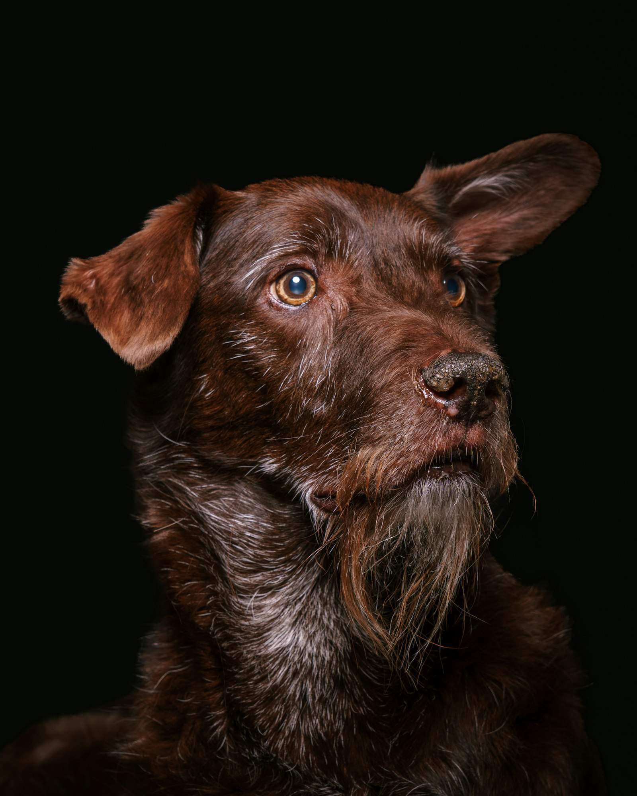
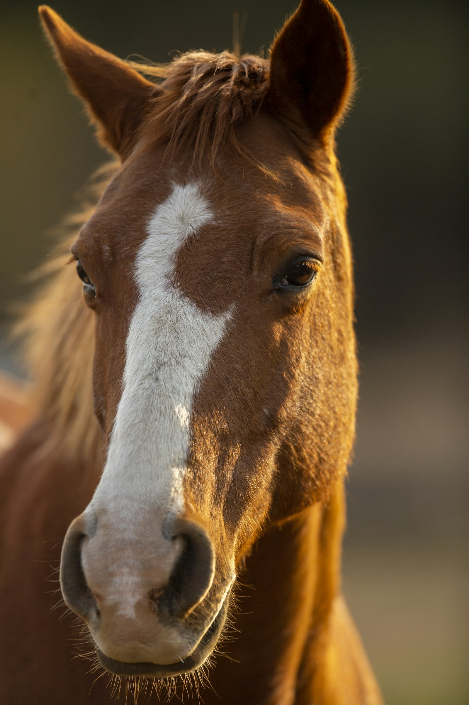
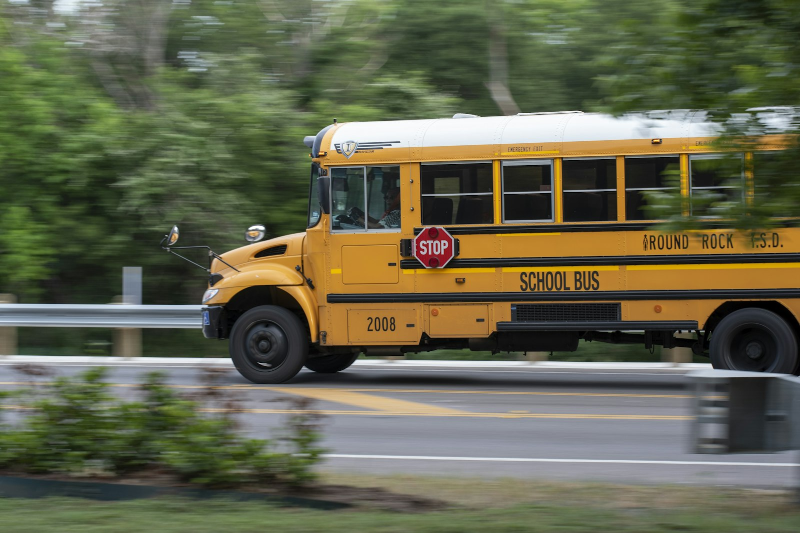
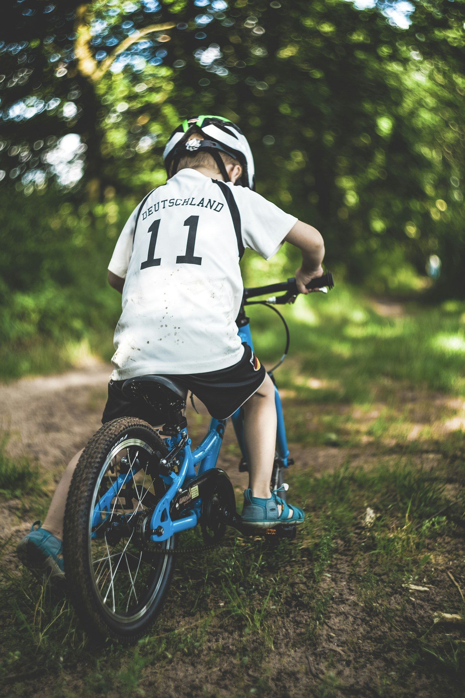

Numero 2 · 2 novembre 2026
Cinquanta giorni senza una domanda
Il numero così come è arrivato agli iscritti.
Buongiorno
Una cagnolina di nove anni che nessuno sceglieva. Un rifugio per cavalli costruito con il legno del proprio bosco. Un ragazzo che salta su uno scuolabus senza nessuno alla guida. E un sedicenne che ha deciso che imparare ad andare in bici non può dipendere dai soldi.
Questa settimana sono storie di attese. Tutte finiscono bene.
Cinque minuti di storie vere. Buon lunedì.
La storia della settimana
Lexi, la cinquantesima notte

Foto di repertorio · Nicolás Pinilla / Unsplash
Il 4 ottobre, a metà pomeriggio, nell'atrio del Michigan Animal Rescue League, un rifugio vicino a Detroit, le persone hanno cominciato a mettersi in fila. Volontari, personale, chi passava di lì. Qualcuno batteva le mani, qualcuno si asciugava gli occhi. In mezzo, al guinzaglio, camminava una cagnolina di nove anni che si chiama Lexi.
Era arrivata cinquanta giorni prima. La sua famiglia non poteva più occuparsi di lei e l'aveva lasciata a una clinica veterinaria della zona. La clinica ha chiamato il rifugio, e il rifugio ha detto sì.
Lì dentro Lexi è diventata in fretta la preferita di tutti. «È difficile resistere al suo sorrisetto», racconta Audrey Blaylock, che si occupa della comunicazione del rifugio. Ma fuori, nessuno si faceva avanti. I giorni sono diventati settimane, e al cinquantesimo giorno Lexi non aveva ricevuto nemmeno una richiesta di adozione. Nei rifugi succede spesso: chi cerca un cane guarda prima i cuccioli, e un cane di nove anni resta indietro.
Poi è entrata una famiglia che aveva appena perso il proprio cane, a quattordici anni. Cercavano, dice Blaylock, «un compagno tranquillo, che volesse solo stare in compagnia». Al rifugio hanno pensato subito a lei. È bastato un incontro.
Così, il giorno della partenza, nessuno è voluto mancare. «Quando uno dei nostri cani va a casa, tutti vogliono salutarlo», spiega Blaylock. Il rifugio ha pubblicato il video la sera stessa: Lexi attraversa l'atrio con la coda che va da una parte all'altra, tra gli applausi, fino alla porta. Dall'altra parte la aspettava una casa.
Fonti: Ashley Ortiz, The Dodo, 9 ottobre 2026 — leggi l'articolo · video del Michigan Animal Rescue League, 4 ottobre 2026 — guarda
Le buone nuove
Le stalle costruite con il loro bosco

Foto di repertorio · Pieter van Noorden / Unsplash
A Norton, in Massachusetts, Heidi e Bobby Medas, sposati da 42 anni, hanno trasformato undici acri di terreno in un rifugio. Le stalle le ha costruite Bobby, ex operaio del servizio strade del paese, con il legno degli alberi tagliati sulla loro proprietà.
Oggi la Smokey Chestnut Farm ospita una ventina di animali, tra cui 14 cavalli. Quasi tutti arrivano dai kill pen, i recinti dove i cavalli aspettano di essere caricati per il macello. Due sono ciechi, Grace e Dakota. C'è Zilla, che una volta tirava i calessi di una comunità Amish. Qui nessuno deve fare niente: niente finimenti, niente lavoro, si resta per tutta la vita.
Il nome viene dal primo di loro. Smokey aveva passato anni nella polizia a cavallo. Finito il servizio, era finito in un recinto diretto al macello. Heidi lo ha portato a casa, malgrado l'artrite e i problemi agli zoccoli, e Smokey è vissuto con loro per circa nove anni.
«Sapevo di dover seguire il mio cuore», racconta Heidi.
Fonti: Lisa Hughes, CBS Boston, 22 ottobre 2026 — link · sito della fattoria — la storia di Smokey
Dieci secondi per decidere

Foto di repertorio · Trac Vu / Unsplash
Lunedì 19 ottobre, a Saint Paul, in Minnesota. Ebro Ahmed, 27 anni, sta tirando calci a un pallone davanti al negozio di famiglia. Passa uno scuolabus, piano, a una quindicina di chilometri orari, con le porte aperte e le luci accese. Dentro ci sono 19 ragazzi di una scuola media. L'autista ha un malore.
Ebro esita un attimo, poi corre e salta a bordo. Non ha mai guidato un autobus. Prova a fermarlo e, per sbaglio, mette la retromarcia. «Ho sentito i bip e andavamo all'indietro», racconta. Mette in folle, tira il freno a mano. Il bus si ferma. Due ragazze sedute davanti lo aiutano: a una lancia telefono e occhiali perché glieli tenga, poi chiama i soccorsi.
Nessun ragazzo si è fatto male. Il distretto scolastico ha fatto arrivare un altro bus per riportarli a casa e ha fatto sapere che l'autista è stato dimesso e si sta riprendendo a casa.
Come ha fatto a restare calmo? «In Grey's Anatomy i medici non vanno mai nel panico.»
Fonti: CBS News, 21 ottobre 2026 — link · People, 23 ottobre 2026, con il comunicato del distretto — link
Il corso che non c'era più

Foto di repertorio · Markus Spiske / Unsplash
Ad Alpharetta, in Georgia, il grande negozio di articoli sportivi della zona organizzava corsi a pagamento in cui i bambini imparavano ad andare in bicicletta. Poi li ha chiusi. Jonathan Thai, triatleta, all'epoca sedicenne, ha deciso di riaprirli lui, gratis, per i bambini delle famiglie che non potevano permetterseli.
A gennaio 2025 ha fondato la Pedal Forward Foundation. Il primo corso si è tenuto a giugno: trenta, quarantacinque bambini alla volta, ognuno con una bici e un casco da portarsi a casa. Secondo la fondazione, da allora i corsi sono stati dodici, i bambini più di 350, le biciclette donate 400 e i caschi 500, grazie a oltre 30.000 dollari raccolti.
Jonathan racconta di essersi ispirato ai genitori, cresciuti nelle campagne del Vietnam del dopoguerra. Oggi la fondazione ha aperto sedi in Tennessee e a New York, e lui sta preparando un viaggio per portare biciclette proprio lì, nel Vietnam rurale.
Fonti: Good News Network, 14 ottobre 2026 — link · Points of Light — link · sito della fondazione — link
Il numero della settimana
50 — i giorni che Lexi ha passato in rifugio senza ricevere una sola richiesta di adozione. Il cinquantunesimo è arrivata la famiglia giusta.
La micro-azione
Questa settimana: un'occhiata al rifugio più vicino. Molti pubblicano online le schede dei loro animali. Guarda quelli che sono lì da più tempo, quasi sempre i più anziani. Anche condividere la scheda giusta con la persona giusta può bastare.
E se conosci una storia vera che merita di essere raccontata, rispondi a questa email: la verifichiamo e, se regge, entra in uno dei prossimi numeri.
Come abbiamo verificato questo numero
Abbiamo letto per intero ogni articolo citato e controllato nomi, date e numeri prima di scrivere. Lexi: il racconto viene dal rifugio, tramite la sua responsabile della comunicazione intervistata da The Dodo; la data è quella del video pubblicato dal rifugio. Smokey Chestnut Farm: numeri e citazione dal servizio di CBS Boston, la storia di Smokey dal sito della fattoria. Ebro Ahmed: dinamica e citazioni da CBS News; numero dei ragazzi e condizioni dell'autista dal comunicato del distretto scolastico riportato da People. Pedal Forward: le cifre sono della fondazione e non esistono bilanci pubblici, per questo le attribuiamo. Ogni fonte è linkata, così puoi controllare anche tu. Se troviamo un errore, lo correggiamo nel numero successivo, con la data.
Tutte le fonti di questo numero
Lexi, la cinquantesima notte
The Dodo, Ashley Ortiz, 9 ottobre 2026 — articolo
Michigan Animal Rescue League, video del 4 ottobre 2026 — Facebook
Le stalle costruite con il loro bosco
Dieci secondi per decidere
CBS News, 21 ottobre 2026 — articolo
People, 23 ottobre 2026, con il comunicato di Saint Paul Public Schools — articolo
Il corso che non c'era più
Good News Network, 14 ottobre 2026 — articolo
Points of Light, profilo di Jonathan Thai — link
Pedal Forward Foundation — sito
Le foto sono di repertorio, da Unsplash: Nicolás Pinilla, Pieter van Noorden, Trac Vu, Markus Spiske.
Buonaluce — Buone notizie. Buona luce.
Newsletter indipendente, non registrata come testata giornalistica. Ti è arrivata da un amico? Iscriviti su buonaluce.it